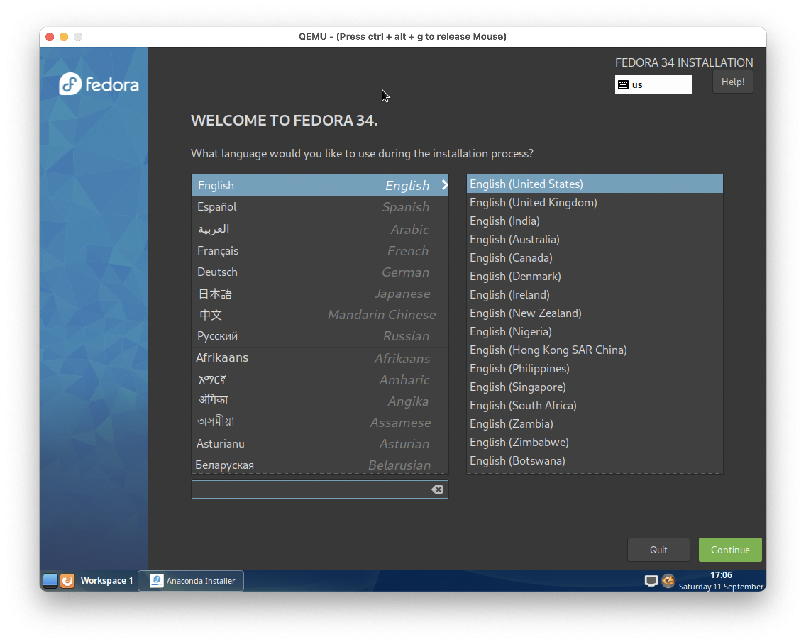

Part 1: Install the distro to a virtual hard drive
-
Install QEMU
-
Create your installation disk
qemu-img create -f qcow2 install-disk.img 16G
Name the disk anything you want, and use the final argument to set the initial size.
-
Download the live installer for the distro of your choice.
-
Use QEMU to boot the installer
qemu-system-x86_64 -m 2048 -boot -d -accel hvf -smp 4 -net nic -net user -hdd testing-image.img -cdrom Fedora-Cinnamon-Live-x86_64-34-1.2.iso
Flags explanation:
-
-m 2048 - Set the amount of RAM in megabytes for the VM
-
-boot -d - boot to the CD-ROM (containing the live installer) first, before trying virtual hard disk
-
-accel hvf - the Hypervisor framework to use. For best results:
-
macOS host:
hvf
-
Linux host:
kvm
-
Windows host:
whpx
-
-smp 4 - the number of virtual CPU cores to provide to the VM.
-
-net nic -net user - make an Ethernet adapter available to the VM, so that it has internet access
-
-hdd testing-image.img The virtual hard drive to use.
-
-cdrom Fedora-Cinnamon-Live-x86_64-34-1.2.iso - the disk image to put in the VM's CDROM slot. Set this to the live installer iso you downloaded.
To run in text mode rather than graphics mode, add the -nographic flag.
-
Follow the instructions in the on-screen installer.

Part 2: Running after installation
Now that the distro has been installed to the virtual hard drive, we can simplify our command
-
Copy the command you used earlier to launch the VM, but do not run it
-
Remove the
-cdrom flag from the command. Since the OS is installed, you no longer need the installer ISO
-
Save the command to a shell script
You can now use the shell script to launch the VM whenever you want to use it.